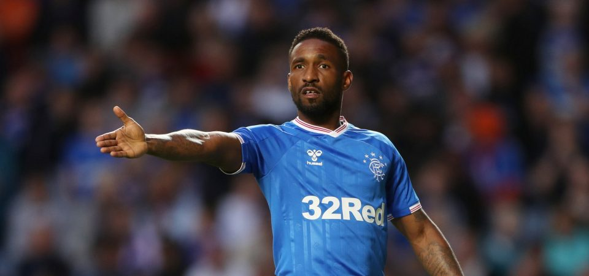
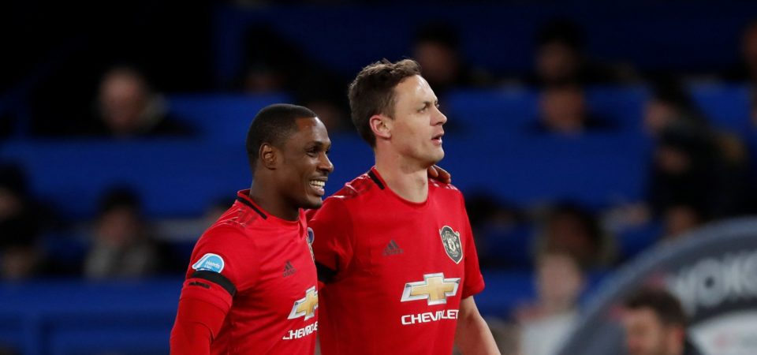
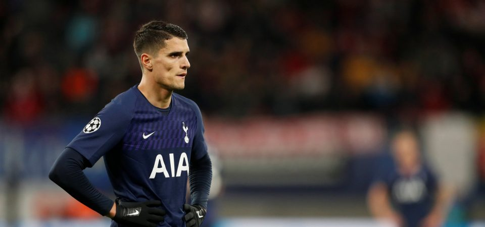

Cricket Blog

-
Exclusive: Jermain Defoe on his Rangers dream, West Ham exit and leaving Spurs twice
Very few players split opinion between Tottenham and West Ham fans like Jermain Defoe does.
For the former, he is a goalscoring hero having scored almost 150 goals across two very successful spells in North London. For the latter, he’s a player who is perceived to have betrayed his roots by trying to leave at a time when the Hammers needed him most. But regardless of all that, the striker has enjoyed a hugely successful career, in which he has scored for every club he’s played for and is currently on a mission to help Rangers win their first SPL title since 2011. For young football fans, he’s a role model both on and off the pitch. If his goalscoring exploits for both club and country weren’t inspirational enough, his charitable work away from the pitch certainly is.
Read more about this
-
Newcastle may repeat their Michael Owen mistake with Gareth Bale
According to Marca, Newcastle have made Real Madrid superstar Gareth Bale one of their main priorities should the club’s proposed takeover go through.What’s the word? The Magpies have been linked with some high-profile names in recent weeks, with the likes of Philippe Coutinho and James Rodriguez being touted with potential moves to St James’ Park.
Read more about this

-
Newcastle would be foolish to move for Odion Ighalo
According to Sky Sports, Newcastle are interested in bringing current Manchester United loanee Odion Ighalo to St James’ Park this summer.What’s the word?
The Nigerian joined the Red Devils on a dramatic deadline day in the January transfer window, and enjoyed a reasonable start to life at Old Trafford with four goals in just eight games across all competitions.
Now, Sky Sports claim that Ighalo’s parent side, Shanghai Shenhua, expect Ighalo to return from his loan spell in time for the start of the new Chinese Super League season and that they will only allow him to remain at United if it’s on a permanent deal.
Read more about this
-
Spurs must beat Arsenal to Axel Disasi signing this summer
According to RMC Sport, Tottenham are in the race to sign Reims defender Axel Disasi this summer.
What’s the word?
With Jan Vertonghen’s long-term future at the club up in the air as he enters the final few weeks of his existing contract, recent reports have suggested that the Belgium international is inching towards leaving north London.
Now, French publication RMC Sport claim Spurs are interested in signing Disasi to bring some added strength at the centre-back position, but that they are set to face stiff competition from the likes of Arsenal and Southampton.
Read more about this

-
Alasdair Gold thinks Spurs should offload Erik Lamela this summer
Tottenham Hotspur are expected to go into the summer transfer window without much of a budget, in fact, the Evening Standard have reported that Jose Mourinho will be left to deal in swap deals and free signings.
It’s also claimed that the Portuguese boss will be able to use any funds made through the sale of players, and Football.London reporter Alasdair Gold has urged the club to consider selling Erik Lamela.
Read more about this